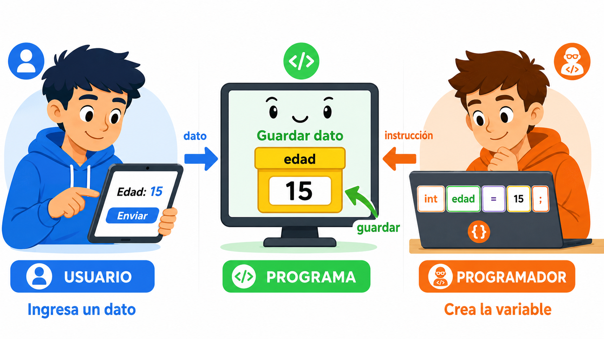
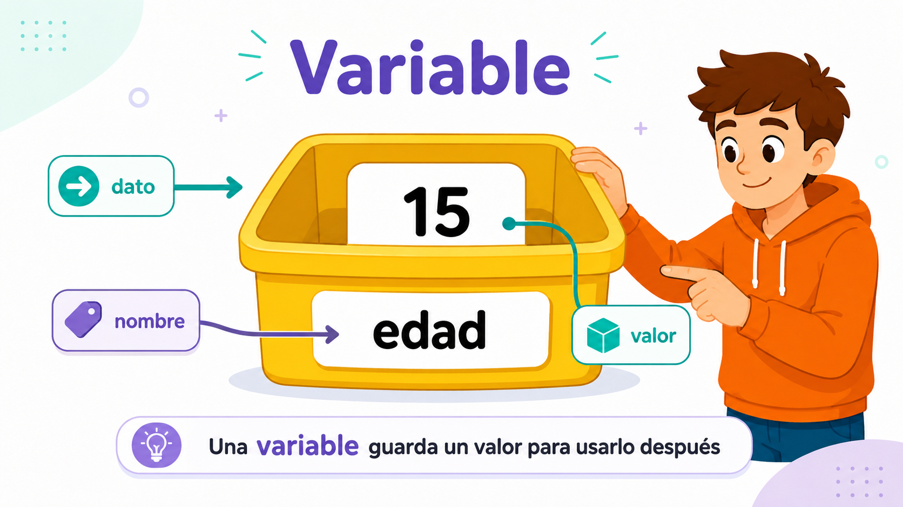
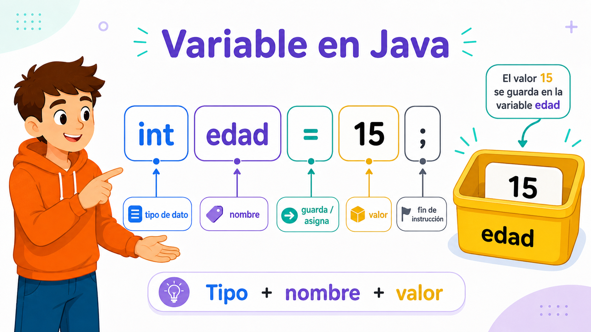
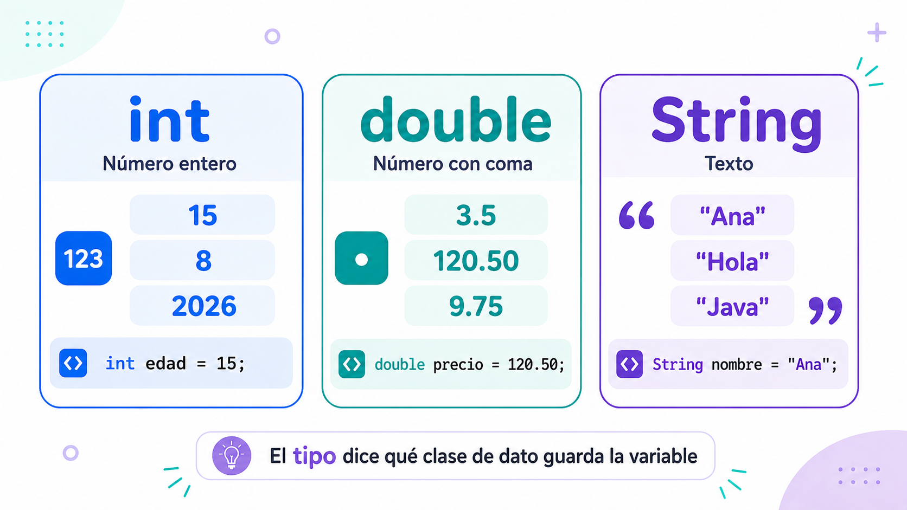
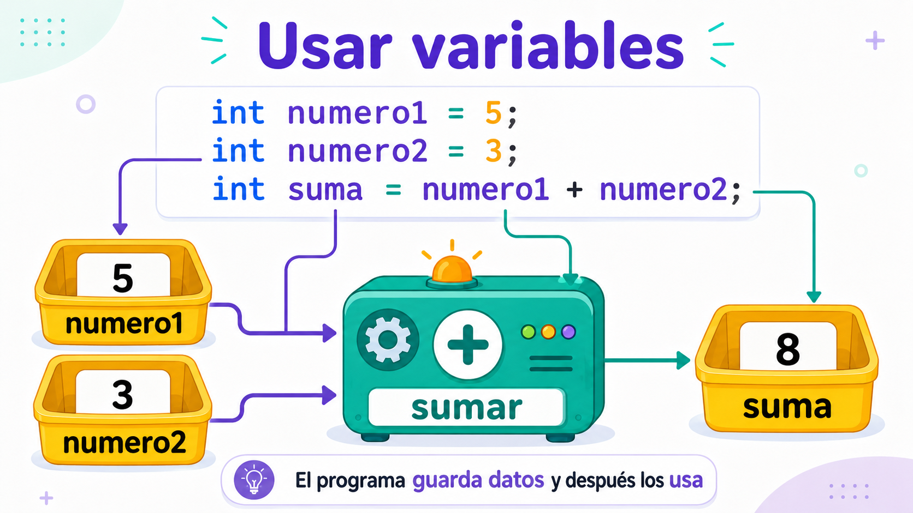
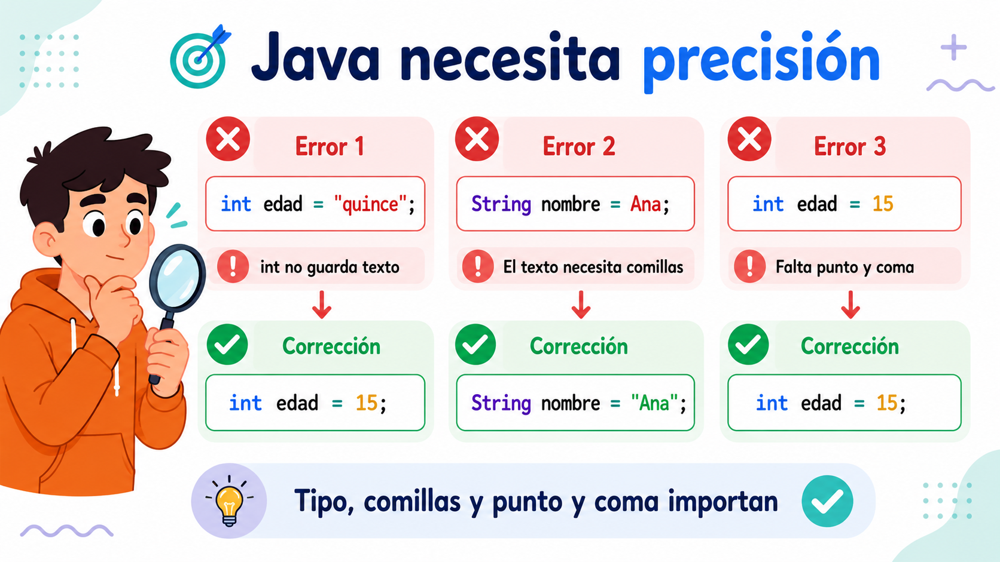

El programa necesita guardar datos
Si el usuario ingresa un dato, el programa debe guardarlo para poder usarlo después.
En una actividad anterior vimos que el usuario puede ingresar datos. Por ejemplo, puede escribir una edad: 15.
Pero el programa no puede trabajar con ese dato si no lo guarda en algún lugar. Ese lugar se llama variable.
int edad = 15;Esta línea dice: “guardá el número 15 en una variable llamada edad”.

Una variable es una caja con nombre
La caja guarda un valor. El nombre permite encontrar ese valor después.

Para entender una variable, podemos imaginar una caja. La caja tiene una etiqueta con el nombre y adentro guarda un valor.
En el ejemplo, el nombre de la variable es edad y el valor guardado es 15.
Cómo se escribe una variable en Java
En Java no alcanza con guardar un valor: también debo indicar el tipo de dato.
Java necesita una forma precisa para crear variables. Por eso escribimos la línea siguiendo una estructura:
int edad = 15;| Parte | Qué significa |
|---|---|
| int | Tipo de dato: indica que voy a guardar un número entero. |
| edad | Nombre de la variable. |
| = | Asignación: guarda el valor en la variable. |
| 15 | Valor guardado. |
| ; | Fin de la instrucción. |

Tres tipos de datos básicos
El tipo le dice a Java qué clase de dato va a guardar la variable.

Para empezar, vamos a trabajar con tres tipos muy usados. Cada tipo acepta una clase diferente de dato.
int edad = 15;
double precio = 120.50;
String nombre = "Ana";Usar variables para calcular
Guardar datos sirve porque después el programa puede usarlos en operaciones.
Una variable no es solo un dato quieto. El programa puede usar el valor guardado para hacer cálculos.
int numero1 = 5;
int numero2 = 3;
int suma = numero1 + numero2;Primero se guardan dos valores. Después, la variable suma guarda el resultado de usar numero1 y numero2.
Acercamiento a Java real
Más adelante, esos valores no estarán escritos a mano: los pediremos al usuario con Scanner. Por ahora nos concentramos en entender cómo se guardan y se usan.

Java necesita precisión
Tipo de dato, comillas, mayúsculas y punto y coma cambian el significado del código.

En programación, un pequeño detalle puede hacer que el código no funcione. Eso no significa que el estudiante “no sepa”: significa que hay que revisar con atención.
Algunos errores comunes son usar un tipo incorrecto, olvidarse de las comillas en un texto o no escribir el punto y coma al final.
// Error: int no guarda texto
int edad = "quince";
// Correcto
int edad = 15;
// Error: falta comillas en el texto
String nombre = Ana;
// Correcto
String nombre = "Ana";Un primer programa con variables
Este ejemplo junta variables, cálculo y salida por pantalla.
Este código todavía no pide datos al usuario. Los valores están escritos directamente en el programa. Eso nos permite concentrarnos en las variables y en el cálculo.
public class Main {
public static void main(String[] args) {
int numero1 = 5;
int numero2 = 3;
int suma = numero1 + numero2;
System.out.println(suma);
}
}Para cerrar
Una variable es una forma de guardar información dentro del programa. En Java, para crear una variable debo escribir el tipo de dato, el nombre, el signo de asignación, el valor y el punto y coma. Cuando el programa usa el nombre de la variable, Java trabaja con el valor que está guardado allí.